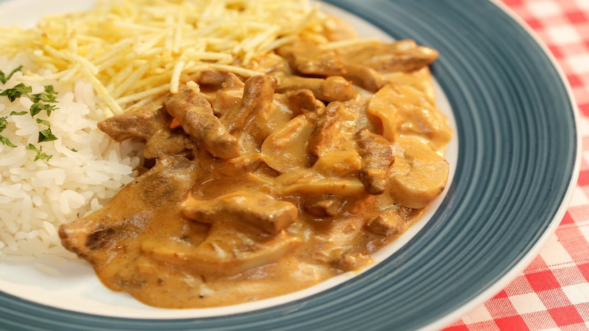

Beef Stroganoff

The most amazing Beef Stroganoff you will ever have! Golden seared juicy beef strips smothered in an incredible sour cream mushroom gravy, this Beef Stroganoff recipe is an easy 30 minute recipe.
Ingredients
- 600 g / 1.2 lb scotch fillet steak / boneless rib eye
- 2 tbsp vegetable oil
- 1 large onion
- 300 g / 10 oz mushrooms
- 40 g / 3 tbsp butter
- 2 tbsp flour
- 2 cups / 500 ml beef broth
- 1 tbsp Dijon mustard
- 150 ml / 2/3 cup sour cream
- Salt and pepper
- Use your fist (or rolling pin or mallet) to flatten the steaks to about 3/4cm / 1/3" thick. Slice into 5mm / 1/5" strips (cut long ones in half), discarding excess fat.
- Sprinkle with a pinch of salt and pepper.
- Heat 1 tbsp oil in a large skillet over high heat. Scatter half the beef in the skillet, QUICKLY spread it with tongs. Leave untouched for 30 seconds until browned. Turn beef quickly (as best you can!). Leave untouched for 30 seconds to brown. Immediately remove onto a plate. Don't worry about pink bits and that it will be raw inside.
- Add remaining 1 tbsp oil and repeat with remaining beef.
- Turn heat down to medium high. Add butter, melt. Then add onions, cook for 1 minute, then add mushrooms.
- Cook mushrooms until golden. Scrape bottom of fry pan to get all the golden bits off (this is flavour!).
- Add flour, cook, stirring, for 1 minute.
- Add half the broth while stirring. Once incorporated, add remaining broth.
- Stir, then add sour cream and mustard. Stir until incorporated (don't worry if it looks split, sour cream will "melt" as it heats).
- Bring to simmer ,then reduce heat to medium low. Once it thickens to the consistency of pouring cream (3 - 5 minutes), adjust salt and pepper to taste.
- Add beef back in (including plate juices). Simmer for 1 minute, then remove from stove immediately. (Note 4)
- Serve over pasta or egg noodles, sprinkled with chives if desired.